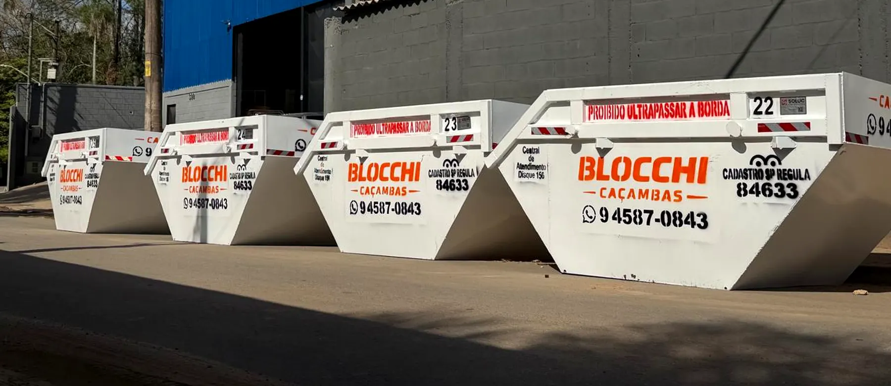
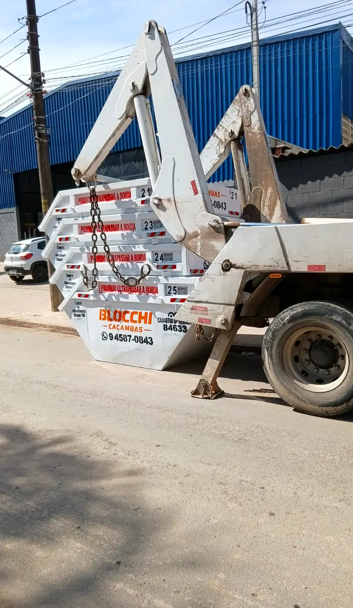
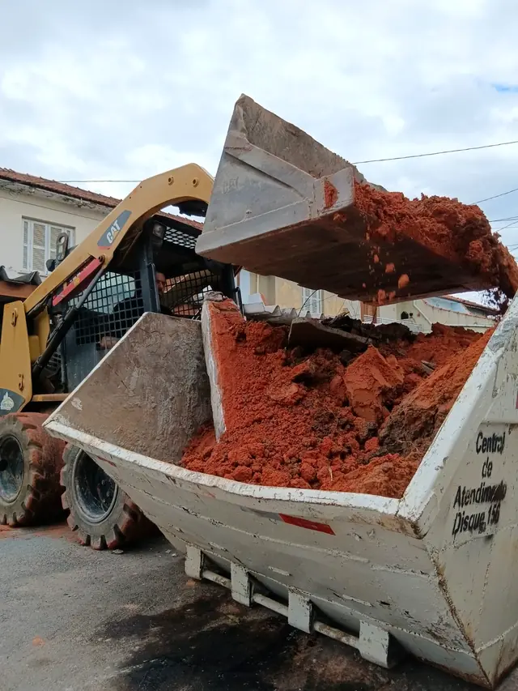
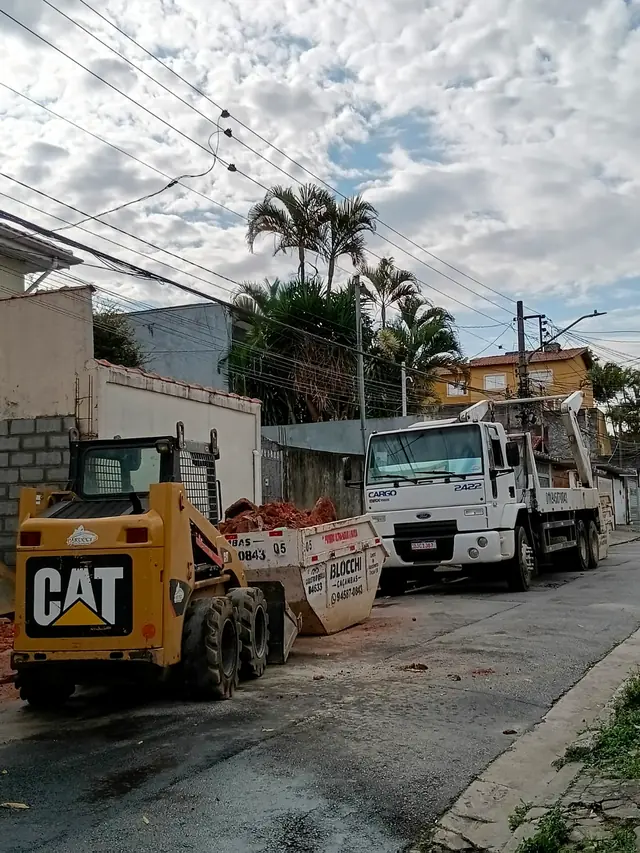
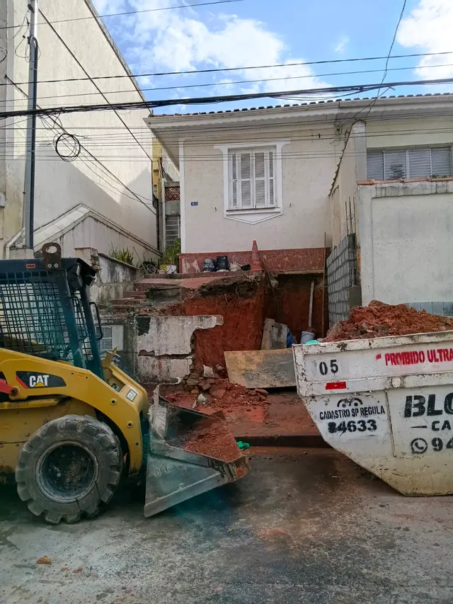
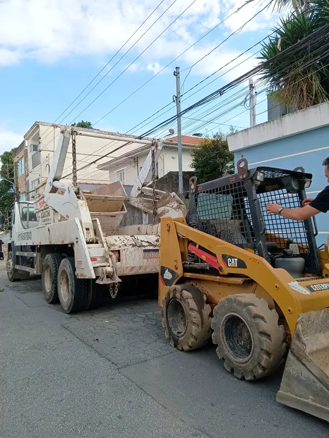

São Paulo · Zona Norte
Caçamba de entulho
em São Paulo
Locação de caçambas para obra e reforma com entrega ágil, prazo de 3 dias úteis e descarte responsável.
Atendimento rápido — orçamento na hora pelo WhatsApp
Quem somos
Empresa de caçambas com atendimento de confiança
A Blocchi Caçambas é especializada na locação de caçambas estacionárias para entulho e resíduos de obra, atendendo a Zona Norte de São Paulo com rapidez e responsabilidade.
Movemos seu projeto com força e precisão: da entrega até a retirada, cuidamos de cada etapa para que sua obra ou reforma não pare. Também fazemos carregamento mecanizado com minicarregadeira, agilizando a limpeza sem esforço manual.

01 — Serviços
A caçamba certa começa
com um pedido bem
informado.
Escolha o tipo de serviço que sua obra precisa. Disponibilidade e condições confirmadas pelo WhatsApp.
Entenda o processoAluguel de caçamba
Para organizar resíduos de obras, reformas e serviços de construção, com entrega ágil.
Saiba maisCaçamba de entulho
Para acondicionar resíduos de construção, como materiais de demolição, tijolo e concreto.
Saiba maisPara obra
Planejamento para reunir resíduos durante as etapas da obra, do início à finalização.
Saiba maisPara reforma
Apoio para reformas residenciais ou comerciais com descarte de madeira e restos de obra.
Saiba maisRetirada de entulho
Organizamos a retirada dos resíduos após a avaliação do material e das condições de acesso.
Saiba maisCaçamba estacionária
Avaliamos o melhor posicionamento da caçamba para a sua obra, reforma ou condomínio.
Saiba maisCarregamento mecanizado
Carregamos entulho e terra com minicarregadeira, agilizando a limpeza da obra sem esforço manual.
Saiba mais
02 — Como funciona
Organize o pedido
antes da obra parar
Do orçamento até a retirada, veja como funciona a locação da sua caçamba.
-
Solicite o orçamento
Fale com a gente pelo WhatsApp e receba seu orçamento rapidamente.
-
Agende com antecedência
Planeje-se e garanta a disponibilidade da caçamba na data da sua obra.
-
Receba no prazo combinado
Entregamos a caçamba no local combinado com agilidade.
-
Preencha sem ultrapassar a borda
Mantenha o material nivelado para garantir segurança no transporte.
-
Retirada em até 3 dias úteis
Prazo padrão de locação. Precisa de mais tempo? Fale conosco antes do vencimento e evite taxas extras.
03 — Área de atendimento
Caçamba de entulho
em toda a
Zona Norte de SP
A cobertura é confirmada pra cada pedido. Informe seu bairro pelo WhatsApp e a gente confere a disponibilidade.
Consultar meu bairroVai começar uma obra ou reforma? Planeje o descarte antes de sujar a rua.
Fale com a gente e organize a caçamba certa antes de começar.
04 — Situações de obra
Cada fase da obra
pede um tipo
de organização.
Conte o que está acontecendo na sua obra ou reforma pra gente indicar a caçamba certa.
Reforma de apartamento
Troca de piso, revestimento, cozinha ou banheiro. A caçamba fica na rua pelo prazo combinado.
Falar no WhatsAppObra e construção
Entulho de alvenaria e etapas de construção, com entrega ágil e retirada em até 3 dias úteis.
Falar no WhatsAppRetirada de entulho
Terminou a demolição ou limpeza de obra? Descreva o volume aproximado pra gente indicar a caçamba.
Falar no WhatsApp
Descarte responsável
Resíduo de obra
não é descarte
indiscriminado.
Antes de contratar, confira o que pode ir na caçamba. Em caso de dúvida, consulte nossa equipe antes do descarte.
✅ Pode ir na caçamba
- Entulho
- Restos de obra
- Madeira
- Tijolo e concreto
❌ Não pode ir na caçamba
- Restos de comida
- Lixo doméstico
- Animais mortos
- Material orgânico
Nossa frota
Caçambas prontas para sua obra
Siga também no Instagram: @blochhicacambas






05 — Dúvidas frequentes
Respostas objetivas
antes de contratar.
Ficou com outra dúvida? Chama a gente no WhatsApp.
Perguntar no WhatsAppQuanto custa alugar uma caçamba em São Paulo?
O valor varia conforme o bairro, o tipo de material e o prazo de locação. Envie sua localização pelo WhatsApp e a gente passa o orçamento na hora.
Vocês atendem meu bairro?
Atendemos toda a Zona Norte de São Paulo. Me chama no WhatsApp com o nome do seu bairro que eu confirmo a disponibilidade.
Quanto tempo posso ficar com a caçamba?
O prazo padrão de locação é de 3 dias úteis. Precisa de mais tempo? Fale com a gente antes do vencimento e evite taxas extras.
O que posso colocar na caçamba?
Entulho, restos de obra, madeira, tijolo e concreto. Materiais fora dessa lista, consulte nossa equipe antes do descarte.
Posso colocar lixo doméstico?
Não. A caçamba é exclusiva para resíduo de obra e reforma — não aceita lixo doméstico, restos de comida, material orgânico ou animais mortos.
Onde estamos
Nossa localização
Rua Julião Fagundes, 652 - São Paulo - SP, 02366-216.
Fale com a gente
Solicite seu orçamento agora
Atendimento rápido pelo WhatsApp. Conte a data da sua obra e o tipo de resíduo que precisa descartar.
-
 WhatsApp: (11) 94587-0843
WhatsApp: (11) 94587-0843
- blocchicacambas@gmail.com
- Rua Julião Fagundes, 652 - São Paulo - SP, 02366-216
-
 Instagram: @blochhicacambas
Instagram: @blochhicacambas